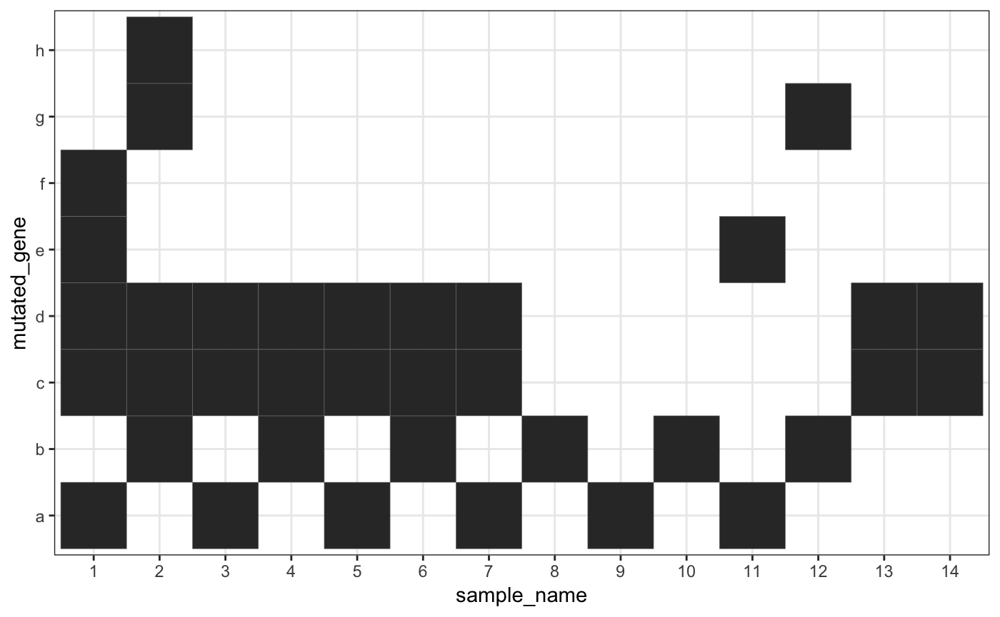

vignettes/compare_rc_to_fisher.Rmd
compare_rc_to_fisher.RmdThis vignette compares the results of the classic one-sided Fisher’s test for mutual exclusivity and the Row-Column Exclusivity test on a simple data set.
simple_dataset %>%
mutate(sample_name = factor(sample_name, levels = as.character(1:14))) %>%
ggplot(aes(x = sample_name, y = mutated_gene)) +
geom_tile(color = "grey50") +
theme_bw()
From the plot, it seems that genes “c” and “d” strongly co-mutate while “a” and “b” are strongly mutually exclusive. Samples “1” and “2” have more mutation than the others.
The following functions perform a one-sided Fisher’s exact test for a odds ratio less than 1. one_sided_fish() takes the data and the column holding the samples and their mutations. It then runs each combination of two genes through the Fisher’s exact test in single_one_sided_fish()
# conduct a one-sided Fisher's exact test between all genes in `mutgene_col`
# of `dat`
one_sided_fish <- function(dat, sample_col, mutgene_col) {
original_colnames <- c(
rlang::as_string(rlang::ensym(sample_col)),
rlang::as_string(rlang::ensym(mutgene_col))
)
# enquote the input column names
sample_col <- rlang::enquo(sample_col)
mutgene_col <- rlang::enquo(mutgene_col)
# vector of all genes
genes <- rlang::eval_tidy(mutgene_col, dat) %>% unlist() %>% unique()
results_tib <- make_empty_results_tracker(genes, 2, c()) %>%
purrr::pmap(single_one_sided_fish, data = dat,
sample_col = !!sample_col, mutgene_col = !!mutgene_col) %>%
bind_rows()
return(results_tib)
}
# conduct a one-sided Fisher's exact test between the genes in `gene_set` using
# the data in `data`
single_one_sided_fish <- function(gene_sets, data, sample_col, mutgene_col) {
# enquote the input column names
sample_col <- rlang::enquo(sample_col)
mutgene_col <- rlang::enquo(mutgene_col)
cont_tbl <- data %>%
make_contingency_table(genes = gene_sets, !!sample_col, !!mutgene_col)
fe <- fisher.test(cont_tbl,alternative = "less")
tibble::tibble(gene_sets = list(gene_sets),
fish_pval = fe$p.value,
oddsratio = fe$estimate)
}make_contingency_table() creates the 2x2 contingency table as input for the Fisher’s exact test in single_one_sided_fish().
# construct the contingency table (2x2)
make_contingency_table <- function(dat, genes, sample_col, mutgene_col) {
# enquote the input column names
sample_col <- rlang::enquo(sample_col)
mutgene_col <- rlang::enquo(mutgene_col)
genes <- unlist(genes)
g1 <- genes[[1]]
g2 <- genes[[2]]
all_samples <- rlang::eval_tidy(sample_col, dat) %>% unlist() %>% unique()
g1_mut <- filter(dat, !!mutgene_col == !!g1) %>% pull(!!sample_col) %>% unique()
g1_wt <- setdiff(all_samples, g1_mut)
g2_mut <- filter(dat, !!mutgene_col == !!g2) %>% pull(!!sample_col) %>% unique()
g2_wt <- setdiff(all_samples, g2_mut)
A <- intersect(g1_mut, g2_mut) %>% length()
B <- intersect(g1_mut, g2_wt) %>% length()
C <- intersect(g1_wt, g2_mut) %>% length()
D <- intersect(g1_wt, g2_wt) %>% length()
matrix(c(A, B, C, D), nrow = 2)
}make_empty_results_tracker() initializes the results tracker with a single column gene_sets containing lists of ever combination of k genes in gs. For this use, k = 2 and seed_genes can be ignored (seed_genes = c()).
# start the results tracking tibble with the gene sets and t_BM_gr = 0
make_empty_results_tracker <- function(gs, k, seed_genes) {
combs <- combn(unlist(gs), k) %>%
apply(2, list) %>%
unlist(recursive = FALSE)
if (length(seed_genes) > 0) {
idx <- purrr::map_lgl(gs, ~ any(seed_genes %in% .x))
combs <- combs[idx]
}
tibble::tibble(gene_sets = combs)
}Running the test produces results that generally agree with the prior visualization. The mutations to “a” and “b” seem to be the only significantly mutually exclusive set.
# column `gene_sets_print` shows the gene sets when printed
fish_test <- one_sided_fish(simple_dataset, sample_name, mutated_gene) %>%
mutate(gene_sets_print = purrr::map_chr(gene_sets, ~ paste0(.x[[1]], "-", .x[[2]]))) %>%
arrange(fish_pval, gene_sets_print, oddsratio)
fish_test
#> # A tibble: 28 x 4
#> gene_sets fish_pval oddsratio gene_sets_print
#> <list> <dbl> <dbl> <chr>
#> 1 <chr [2]> 0.00932 0 a-b
#> 2 <chr [2]> 0.308 0 a-g
#> 3 <chr [2]> 0.308 0 e-b
#> 4 <chr [2]> 0.343 0.362 c-b
#> 5 <chr [2]> 0.343 0.362 d-b
#> 6 <chr [2]> 0.571 0 a-h
#> 7 <chr [2]> 0.571 0 f-b
#> 8 <chr [2]> 0.604 0.527 c-e
#> 9 <chr [2]> 0.604 0.527 c-g
#> 10 <chr [2]> 0.604 0.527 d-e
#> # … with 18 more rows